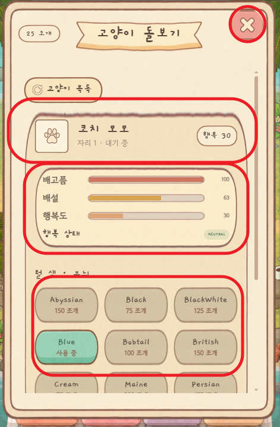
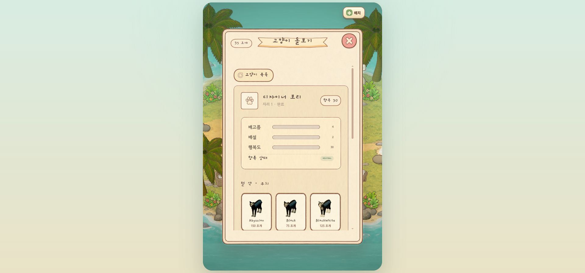
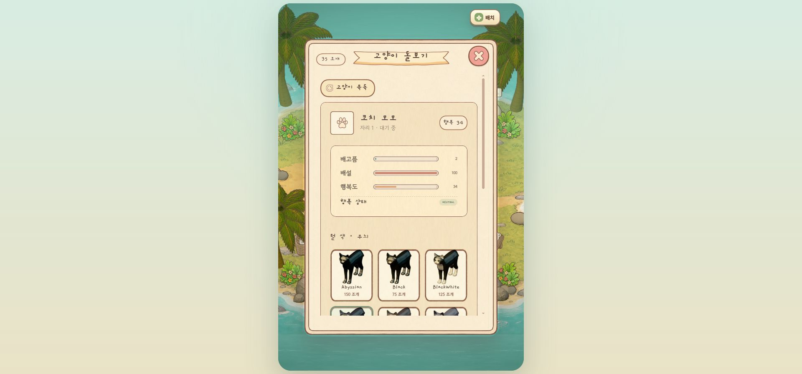
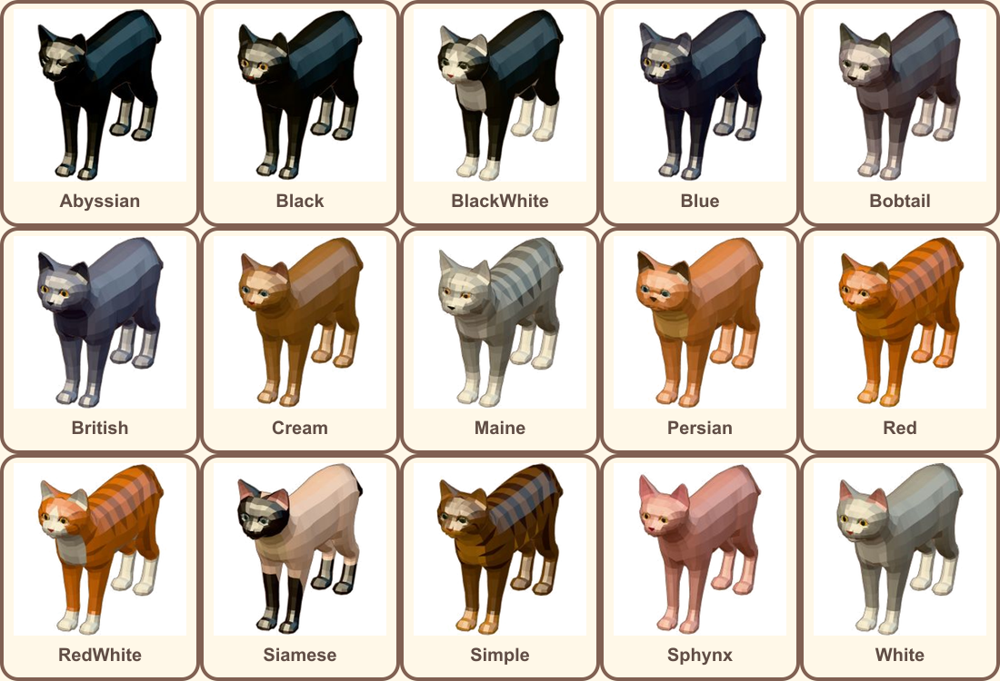
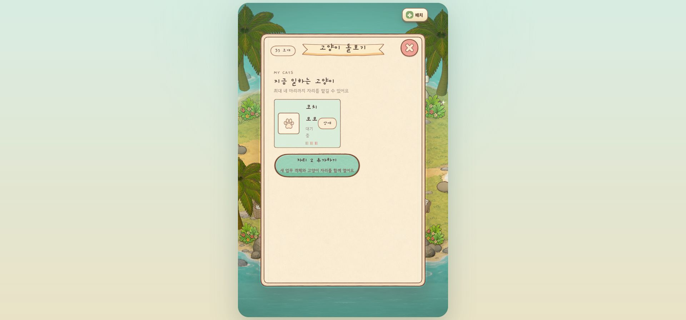
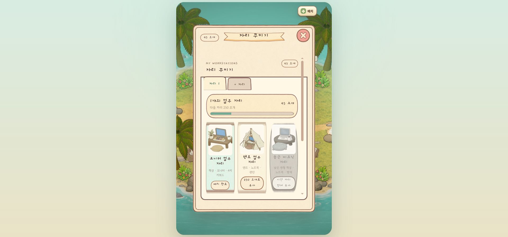
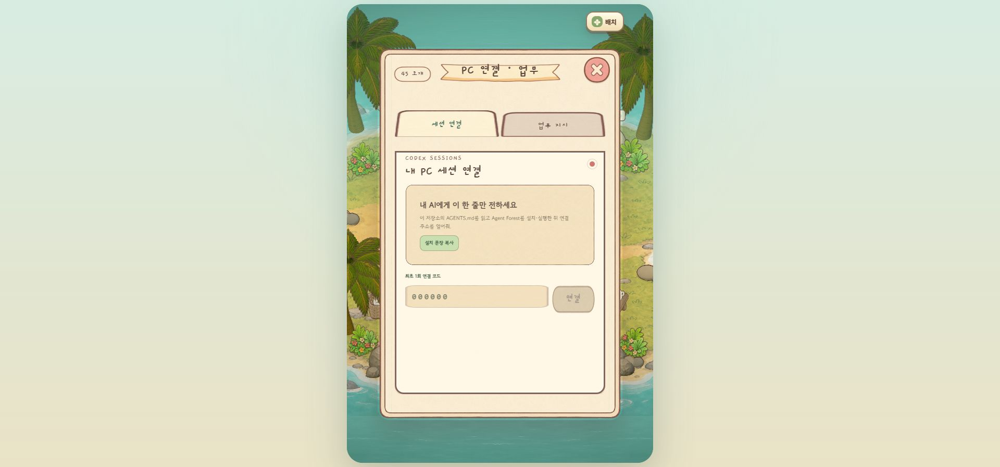
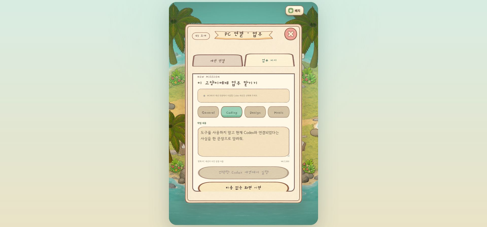
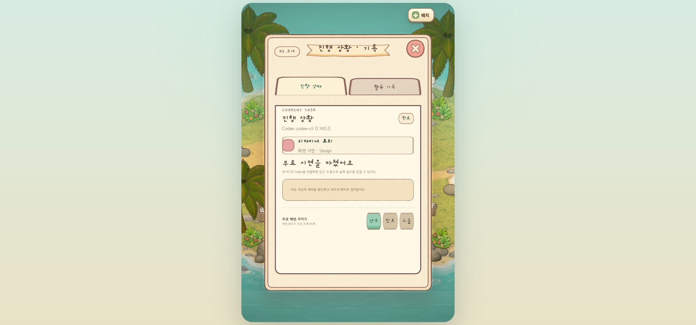
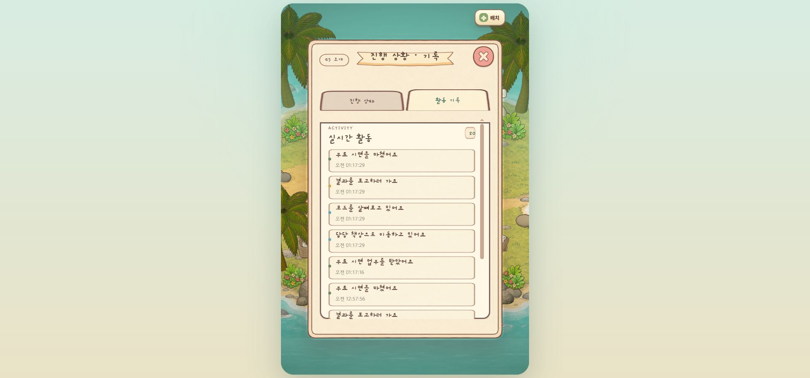

Agent Forest · Popup UI QA
20점 화면을 93점으로 개선한 차수별 검증 보고서
첨부 화면의 X 버튼 오염, 프레임 강제 확대, 욕구 패널 여백, 털색 선택의 실제 모습 부재를 원본 구현에서 수정했습니다. 같은 모바일 뷰포트에서 다시 촬영하고, 추가로 모든 주요 팝업을 눈으로 검수했습니다.
93최종 품질 점수
Iteration score
차수별 점수
Round comparison
같은 문제를 어떻게 줄였는지



Scoring matrix
최종 점수 근거
| 평가 항목 | 확인 결과 | 점수 |
|---|---|---|
| 닫기 버튼 | 하나의 원형 PNG로 교체. 위·아래 잔상과 세로 오염 없음. | 19 / 20 |
| 팝업 프레임 | 모서리를 고정한 9-slice. 상·하단 선 굵기와 곡률 유지. | 19 / 20 |
| 욕구 패널 | 배고픔·배설·행복도 행 간격 통일, 실제 채움 그래프 확인. | 18 / 20 |
| 털색/무늬 | 15개 FBX 스타일을 동일 카메라로 실제 촬영해 선택 카드에 적용. | 19 / 20 |
| 전체 일관성 | 7개 핵심 화면의 타이틀·X·탭·내부 카드 체계를 실화면 검수. | 18 / 20 |
| 합계 | 93 / 100 | |
Actual appearance captures
털색/무늬 15종 실제 모습
이름이나 임의 색상칩이 아니라 프로젝트의 실제 FBX를
/cat-shot에서 같은 카메라·조명·회전값으로 촬영했습니다.
이 이미지가 상세 팝업의 각 선택 카드에 그대로 표시됩니다.

Popup coverage
주요 팝업 전체 검수






Source-level changes
땜질이 아닌 원본 구현 변경
-
닫기 버튼 원본 교체
close-button-round-v3.png하나만 렌더링하도록 바꿨습니다. -
프레임 9-slice
border-image: ... 58 fill로 모서리와 선을 고정했습니다. - 패널별 독립 slice 프로필·욕구·진행바가 서로 다른 비율에서도 선을 유지합니다.
- 실제 스타일 캡처 15종 이미지를 선로딩 목록에 넣어 팝업이 열린 뒤 늦게 뜨지 않습니다.
-
목록 노이즈 원본 폐기
거친
card-selected-v2대신 깨끗한 단색 선택 PNG를 사용합니다. - 상태바 레이어 수정 프레임 이미지가 채움색을 덮던 문제를 제거하고 채움 레이어를 위로 올렸습니다.
최종 판정: 90점 기준 통과
모바일 기준 화면에서 X 오염, 프레임 왜곡, 욕구 영역 여백, 실제 털색 미리보기, 선택 카드 노이즈를 모두 재검수했습니다. 빌드와 자동 테스트 42개도 전부 통과했습니다.